Intervento diretto
Un unico contatto per sopralluogo, preventivo, lavorazione e assistenza.
GIANLUCA LATINA · SIRACUSA E PROVINCIA
Pronto intervento idraulico, impianti, climatizzazione, caldaie e ristrutturazioni: un unico referente a Siracusa e provincia.
DA DOVE VUOI PARTIRE?
Parti dalla tua esigenza e scopri la soluzione.
I NOSTRI SERVIZI
Scegli un servizio per scoprire lavorazioni, dettagli e fotografie.
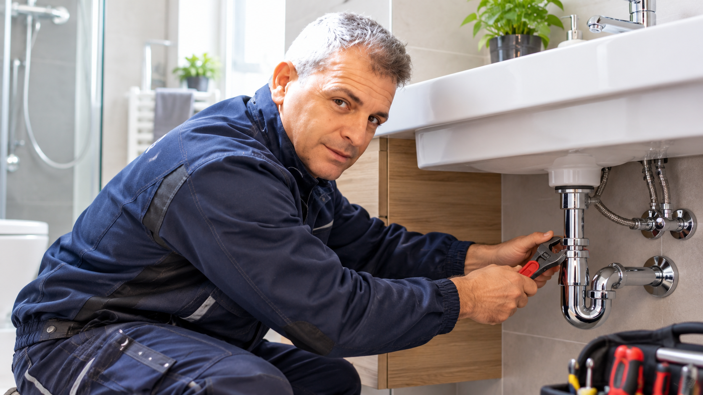
Pronto intervento, perdite, disotturazioni, impianti, sanitari, rubinetteria, press control, serbatoi e box doccia.
Scopri il servizio →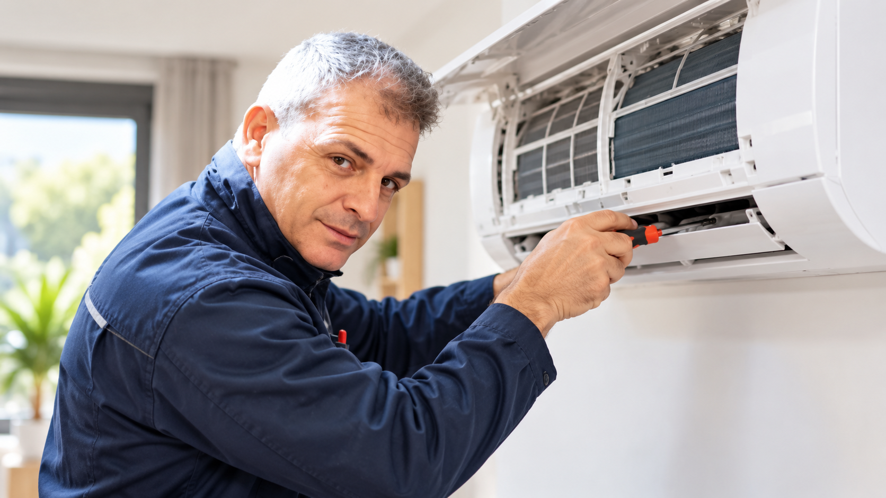
Vendita climatizzatori, installazione certificata F-GAS, assistenza, manutenzione, ricarica gas, pulizia e sanificazione.
Scopri climatizzatori →Installazione, sostituzione e manutenzione di caldaie a condensazione e scaldabagni, con collegamenti termoidraulici.
Scopri il servizio →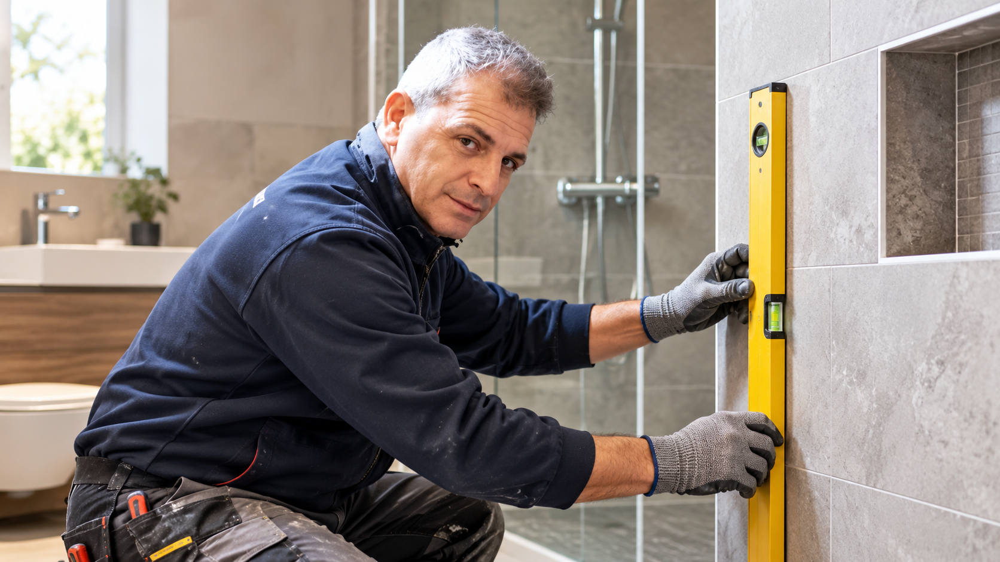
Bagni chiavi in mano: demolizioni, nuovi impianti, posa piatto doccia, rivestimenti, pavimenti e finiture.
Scopri i lavori →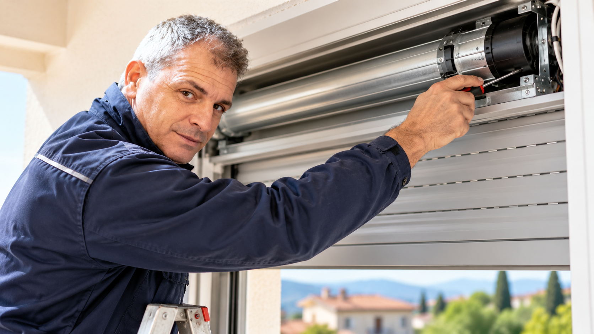
Installazione, riparazione e sostituzione avvolgibili, cinghie, serrande e sistemi di motorizzazione.
Scopri il servizio →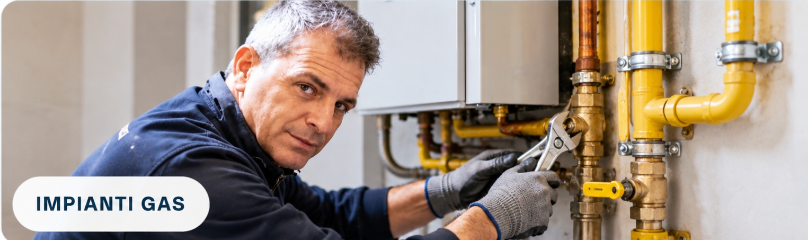
Installazione e adeguamento impianti gas, verifica di tenuta e messa in servizio.
Scopri il servizio →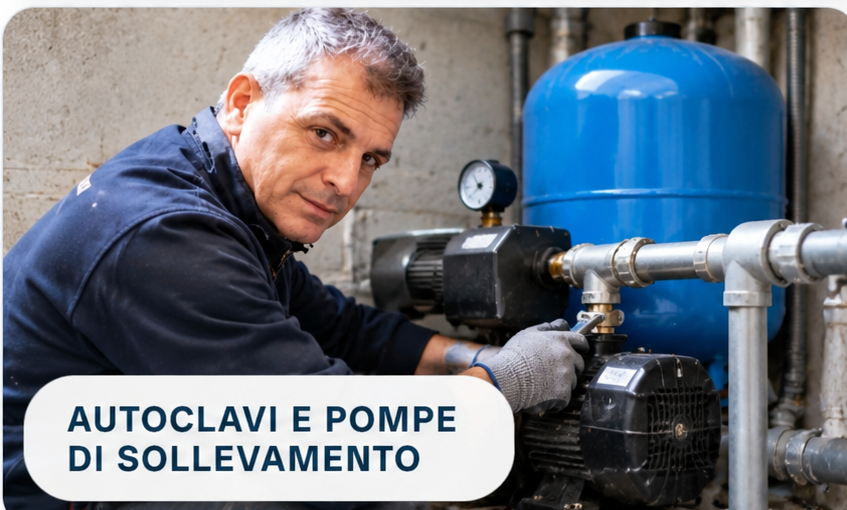
Assistenza autoclavi, pompe di scarico, sollevamento acque, serbatoi e sistemi di pressurizzazione.
Scopri lavori e foto →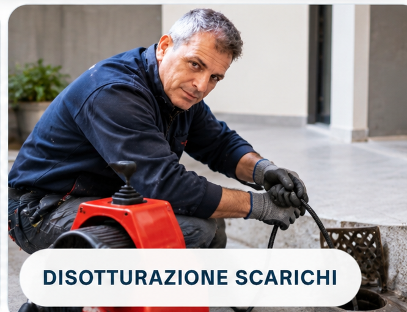
Disotturazione scarichi, pulizia delle condotte e riparazione delle reti di smaltimento.
Scopri il servizio →UNA FOTO PUÒ BASTARE PER INIZIARE
Invia una foto su WhatsApp, indica la zona e descrivi brevemente l’esigenza. Per urgenze idrauliche è disponibile anche la chiamata diretta.
UN PERCORSO SEMPLICE
Un contatto diretto, una valutazione chiara e il servizio più adatto all’esigenza.
Chiama o scrivi su WhatsApp e descrivi il lavoro.
Si definiscono soluzione, materiali e preventivo.
Installazione, riparazione o manutenzione con assistenza diretta.
LAVORI REALI
Scorri una selezione di lavori reali e apri la categoria che ti interessa.
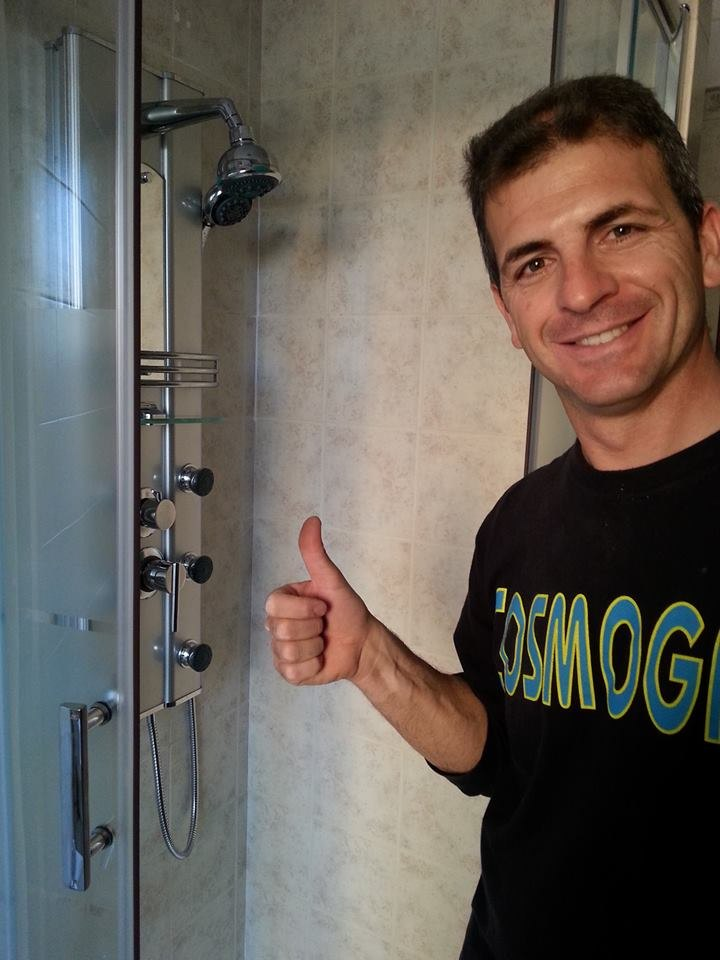
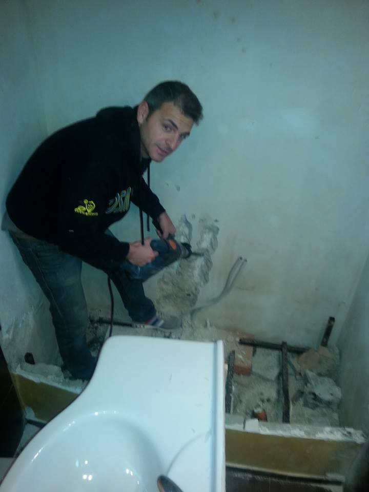
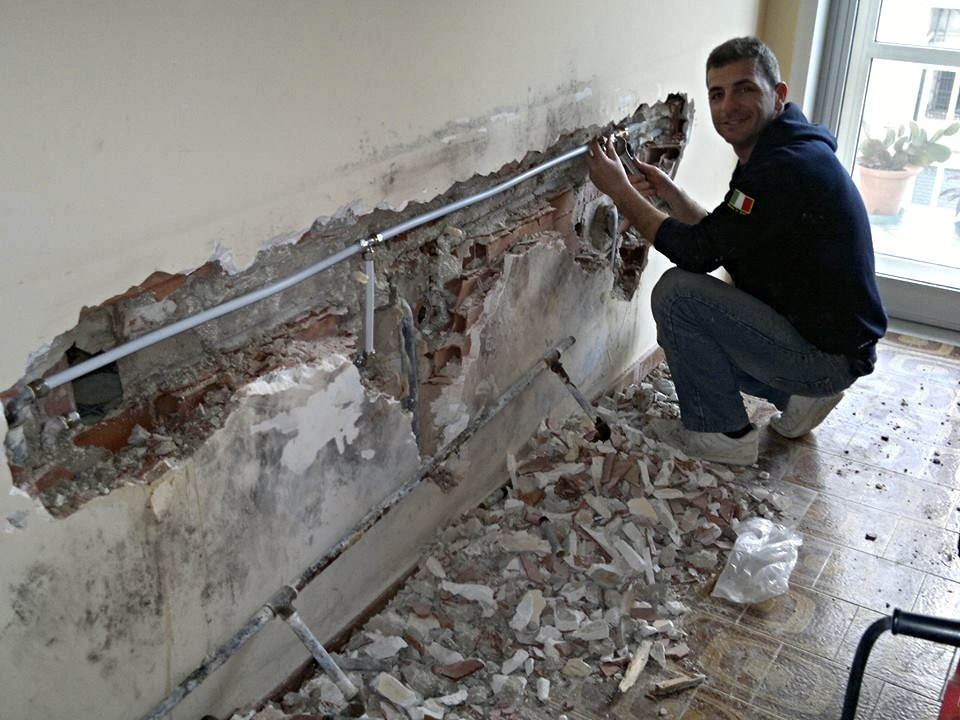
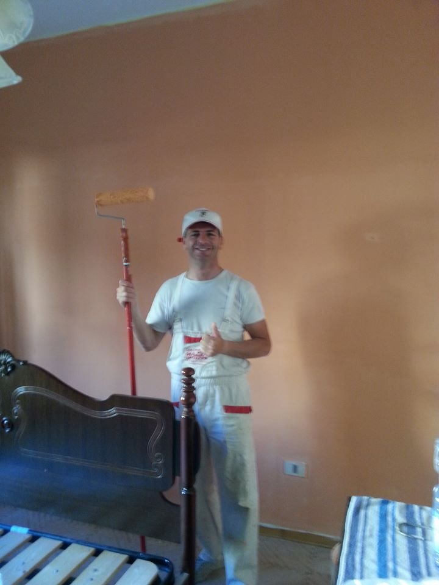
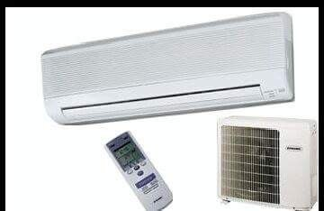
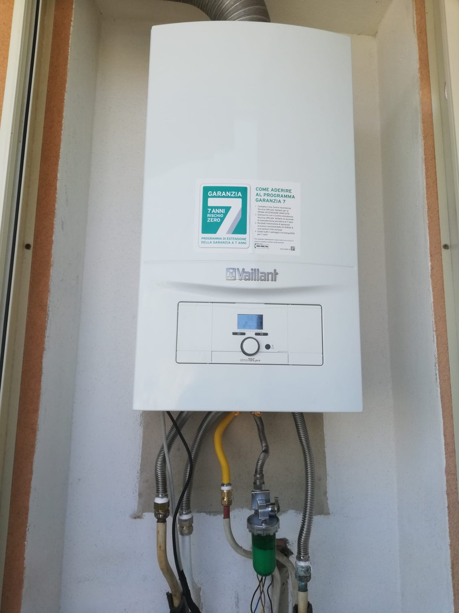
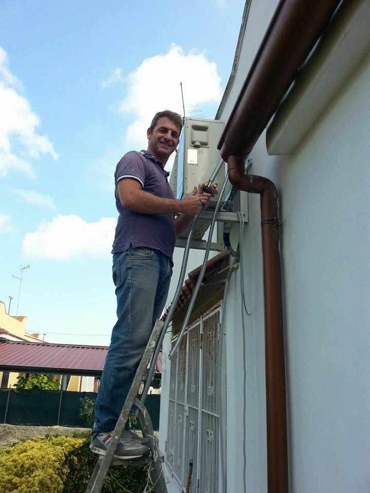
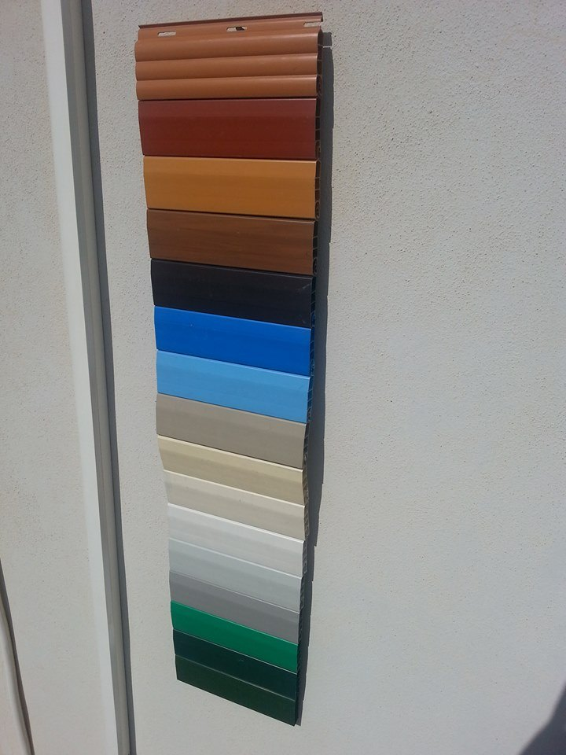
PROMOZIONI
Scopri le promozioni dedicate a climatizzazione e riscaldamento. Le offerte possono variare in base a disponibilità, modello e periodo: contattaci per verificare le condizioni attive.
Scopri le soluzioni e chiedi disponibilità e condizioni aggiornate.
Vai alla promozione →MARCHI TRATTATI
Tutti i marchi presenti nel precedente portale, raccolti in un’unica sezione. La disponibilità di prodotti, modelli e ricambi può variare: contattaci per verificare la soluzione più adatta.


I marchi sono indicati a titolo informativo e non implicano rapporti di esclusiva o rappresentanza ufficiale.
PRESENZA SU GOOGLE
Consulta la scheda dell’attività, le recensioni dei clienti e le informazioni aggiornate direttamente su Google. Sede: Via Professore Vittorio Guardo 20, Siracusa.
ORARI
Orari allineati alla scheda Google dell’attività.
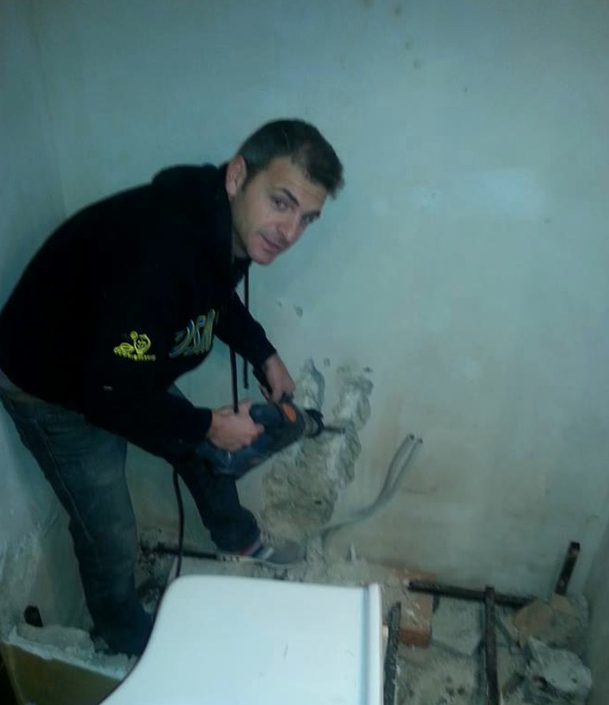
CHI SONO
Gianluca Latina opera a Siracusa e provincia nei settori idraulica e termoidraulica, climatizzazione, caldaie, ristrutturazione bagno e avvolgibili. L’obiettivo è offrire un servizio pratico: capire il problema, proporre la soluzione più adatta e seguire il lavoro fino alla conclusione.
Un unico contatto per sopralluogo, preventivo, lavorazione e assistenza.
Riparazioni, installazioni e manutenzioni per abitazioni, uffici e attività.
Installazione e assistenza su climatizzatori, con servizi di manutenzione e sanificazione.
Le gallerie del sito mostrano interventi e fasi di lavorazione realmente eseguiti.
DOMANDE FREQUENTI
Sì. La sezione Climatizzazione comprende vendita, scelta della potenza, installazione F-GAS, assistenza e manutenzione. Approfondisci il servizio →
Sì. È disponibile il servizio di pulizia e sanificazione degli split e dei componenti accessibili dell’unità interna. Approfondisci il servizio →
Riparazione perdite, disotturazioni, sanitari, rubinetteria, box doccia, press control, serbatoi e manutenzione di impianti idraulici e termici. Approfondisci il servizio →
Sì. Sono previste lavorazioni per bagno completo, impianto idraulico-sanitario, muratura, cartongesso, pittura, piastrelle e pavimentazioni. Approfondisci il servizio →
CONTATTI
Contatta Gianluca Latina per informazioni o per richiedere un preventivo gratuito a Siracusa e provincia.
Via Professore Vittorio Guardo 20 · 96100 Siracusa
Lun–Ven 08:00–19:00 · Sab 08:00–14:00 · Domenica chiuso
I NOSTRI RIFERIMENTI, SEMPRE CON TE
Servizi e contatti in un’unica immagine. Conservala sul telefono o condividila con chi ha bisogno di un intervento a Siracusa e provincia.
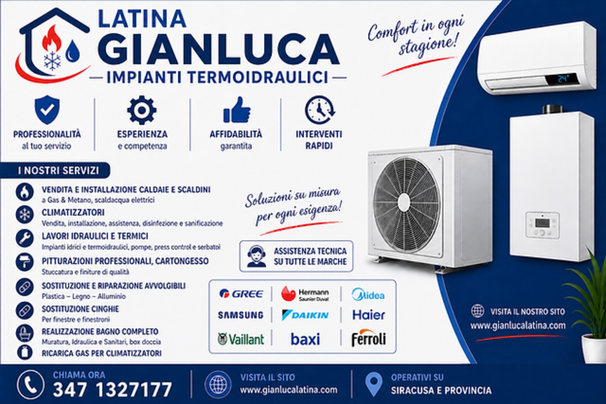